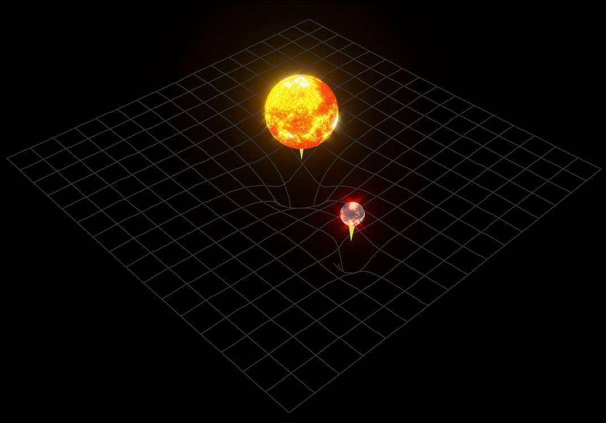

The universe is ever-expanding, and as it expands, all the matter in the universe drifts apart. If you look up into the stars today, almost everything you see is moving away from us, and at one point, everything will be so far apart that we won’t even see them in the night sky. Time will pass, and each and every star that exists will burn out and collapse into a black hole, a dead celestial body from which almost nothing can escape. Stars in the sky will burn out like candles, one by one, turning into black holes until there is no illumination in the universe anymore. Even black holes won’t last forever due to Hawking radiation; black holes will radiate out everything they contain to the point where they’ll be blown out as well.
In fact, not only is the gravity so strong that light can’t escape, but according to Einstein’s equations, the black hole is infinitely dense. This is the point where physics breaks apart. Nothing in the universe can be infinitely dense; almost nothing can be infinite. So why is it that a black hole’s density is the way it is? When a massive star collapses under its own gravity, all its mass is concentrated into a single point, which is called a singularity. A singularity has zero volume, which must mean, mathematically, an infinite density.
Before I explain how black holes specifically warp spacetime, let's talk about how objects in general warp it. Let me start with the basics: everything in existence has gravity that pulls particles towards it, even humans, but our mass is so small that the magnitude of our acceleration due to gravity is negligible. But what causes this force of gravity? According to Einstein’s general theory of relativity, there is no force of gravity, but instead, there is a warpage of spacetime. The greater the mass, the greater the warpage. If we apply that knowledge to black holes, which have the greatest mass in the cosmos, we can see that their warpage would be incredibly large—so large and strong, in fact, that light would not be able to escape. That’s why it’s called a black hole: because light wouldn’t be able to escape it, rendering a black dot.
Supermassive black holes, found at the centers of some galaxies, serve as the dynamo that power quasars—extraordinarily bright objects that can outshine entire galaxies. As gas and dust fall into the black hole, they are heated by friction and gravity. The heated gas and dust emit electromagnetic radiation across the entire electromagnetic spectrum. The black hole's magnetic field traps particles from a spinning disk of gas and dust. The trapped particles are expelled along the black hole's poles, appearing as jets in radio waves and X-rays. For these reasons, black holes are a large factor in many galaxy formations.
People can’t really grasp how gargantuan these objects are. When two black holes orbit each other, they don’t only warp spacetime due to their mass, but as they orbit each other, they also cause ripples along the fabric of space. Think of spacetime as the surface of a pond, and two black holes as beach balls floating on it. If those two beach balls orbit each other, they cause ripples on the surface; same goes for space time, except those ripples are much, much larger. We can actually detect these ripples using Laser Interferometer Gravitational-Wave Observatories, which measure tiny changes in the length of long arms when a gravitational wave passes by.